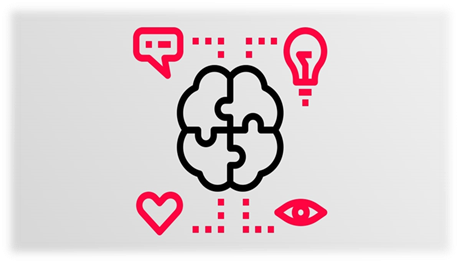
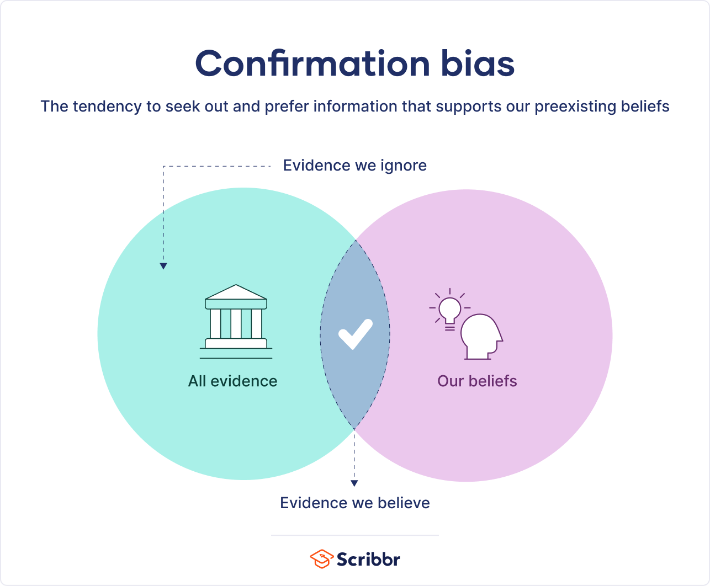
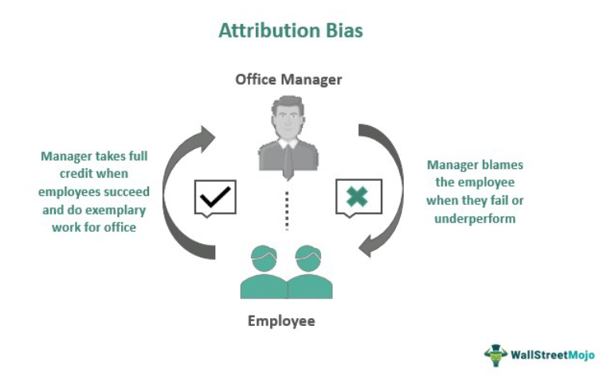
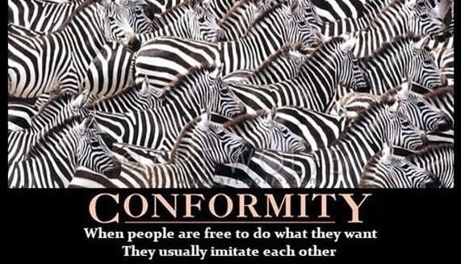
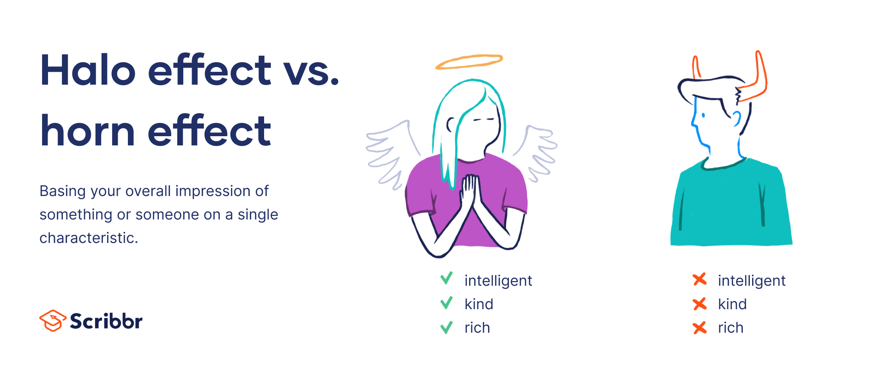
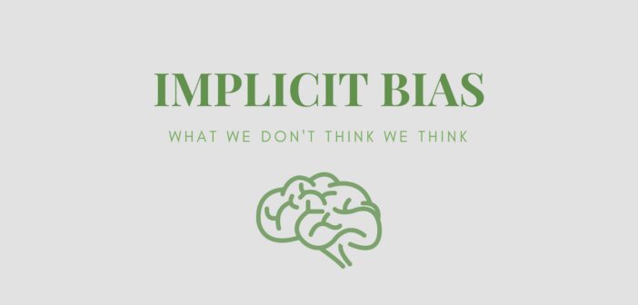

Bias:#
This paper has been created through collaboration with:
Maryam Shirazi Kharazi
contact address: maryam.shirazikharazi@mail.um.ac.ir
Bias, or partiality, is the tendency to support a theory or proposition without examining its truth or falsehood, and it involves refraining from considering alternative logical viewpoints. Bias often unconsciously affects a person’s judgment and frequently leads to misunderstandings and conflicts. Individuals can be biased in favor of or against a person, ethnicity, nation, religion, social class, political party, and theoretical and ideological patterns in scientific fields. Bias means one-sidedness and a lack of impartial perspective or an open mind. Bias can manifest in various forms and is related to prejudice and intuition. Many things can be biased: coins, dice, methods of predicting the weather, descriptions, policies (e.g., regarding admissions), laws, people (including judges, referees, parents, grandparents, teachers, etc.), their perceptions, beliefs, views, judgments, verdicts, actions, etc. This is a nice list of things that can be biased
In recent years, biases have been discussed under the title of Cognitive Biases. These types of biases emerge during human decision-making, judgment, and selection processes. Since humans are constantly making choices and decisions, awareness of these biases is very important.
Humans use shortcuts and simplifications to make quick decisions and avoid confusion. These simplifications are suitable for human survival and life, but the problem begins when incorrect shortcuts are taken. In fact, humans are influenced by their past experiences, assumptions, surroundings, and society, and they usually make decisions based on these parameters rather than the existing reality.

Types of Biases:#
1. Confirmation Bias:#
The tendency to search for or interpret information in a way that confirms one’s own beliefs or hypotheses. In fact, we will seek evidence and reasons that justify our beliefs and inclinations. A simple definition of confirmation bias is that people prefer to pay attention to information that confirms their assumptions and positions.
Some psychologists restrict the term “confirmation bias” to selective collection of evidence that supports what one already believes while ignoring or rejecting evidence that supports a different conclusion. Others apply the term more broadly to the tendency to preserve one’s existing beliefs when searching for evidence, interpreting it, or recalling it from memory.[6][b] Confirmation bias is a result of automatic, unintentional strategies rather than deliberate deception.
Examples of confirmation bias are abundant and are often reminded to audiences in judgment and decision-making training to be careful of the confirmation error and not fall into the trap of this bias.

2. Attribution Bias:#
Occurs when you use your past observations and experiences with an individual as a criterion and basis for judging that individual or others. This issue is very important in the hiring process.

3. Conformity Bias:#
Conformity bias occurs when we voluntarily align our behaviors, beliefs, or attitudes with those of a group. This change happens in response to either real or perceived group pressure: in other words, others can influence us even when they are not physically present. For example, whether we decrease our energy use at home, pay our taxes, or give to charities often depends on our perception of what others are doing.
Conformity, or the tendency to agree with the majority position, is a type of social influence. Social influence is a broad term used to describe the different ways others influence our behavior. The tendency to conform can be observed both in small groups and in society as a whole and may result both from subtle unconscious influences or overt social pressure.
Example: Conformity bias Your friends are making plans for an upcoming concert that they are very excited about. Last time they went to a concert, they were talking about it for a week afterwards, and you felt left out because you did not go with them. Although you are not really keen on that kind of music, you decide to join them this time so as not to feel left out.

4. Halo Bias and Horn Effect:#
The halo effect occurs when you become aware of an outstanding feature or issue about a person and try to attribute this excellence to other areas. Conversely, the horn effect happens when a negative trait or issue is attributed to other areas and characteristics of a person.

5. Gender Bias:#
A tendency or prejudice where an individual judges another solely based on gender. This issue is seen in the hiring process, during promotions, group task assignments, and even in daily workplace behaviors.
6. Age Bias:#
This bias in the workplace leads to having a positive or negative view solely based on a person’s age. For example, it is often said that younger individuals are preferred for hiring over others, or that the opinions of younger people are incorrect.
7. Implicit Bias:#
Research on “implicit bias” suggests that people can act on the basis of prejudice and stereotypes without intending to do so. While psychologists in the field of “implicit social cognition” study consumer products, self-esteem, food, alcohol, political values, and more, the most striking and well-known research has focused on implicit biases toward members of socially stigmatized groups, such as African-Americans, women, and the LGBTQ community.

source:#
https://fa.wikipedia.org/wiki/سوگیری
https://sanjeman.com/blog/بایاس-یا-سوگیری-شناختی-چیست؟/
https://motamem.org/خطای-تایید-خود-یا-self-confirmation-bias/